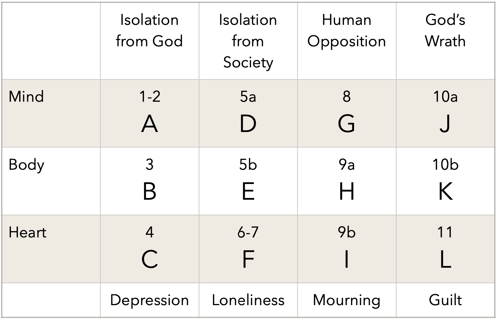

Psalm 102
Published on 2024-06-24

This article originally appeared as part of "Appendix D: To Number our Psalms" of Peace, like Solomon Never Knew. It is part of my journey to understand the Psalms. When I wrote it, I had already had success deciphering Psalm 119 and the Historical Psalms (78, 105, 106, 107, 114, 135, 136). As I was finishing up the book, I made further progress, tackling Psalms 31, 58, 91, 100, 110, 121 and 127. This study was a bridge to the major work of analyzing another seventy or so Psalms in Plague, Precept, Prophet, Peace.
This psalm is remarkable for its compactness and logical organization. Only a person well versed in human psychology who possesses great skill as a writer can compose such a poem. It lays out twelve complaints which diagnose symptoms in three areas of a person: their mental, emotional, and physical health. It identifies the causes of the symptoms as four facets of isolation and opposition involving human society and God. Finally, it enumerates the spiritual consequences: depression, loneliness, mourning and guilt. This was a man who knew himself, knew God, knew the depth of his affliction, its causes and its inevitable outcome should God not intervene. THis was a man who knew how to pray.
Psalm 102 was written by a man who thought he was about to die, but received a reprieve and length of days from the Lord. It is fitting that his words are a prophecy of the future of a nation that felt the same way: Israel.
Psalm 102: A Tale of Three Sieges
Consider the span from the Muslim capture of Jerusalem in 637 AD to the Fall of Constantinople in 1453 AD: 816 years. One way to factor 816 is:
816 = 8 x 102
This points to Psalm 102 with absolutely no justification. If we are to find a reason to pair this psalm with history, especially the history of Islam’s incremental conquest of the Eastern Roman Empire, it must be found in the text.
To do that, we need to know things. Who wrote Psalm 102? Scholars disagree. Some argue for King David, others for an unnamed Jew enduring the Babylonian exile, and yet others for King Hezekiah. Evidence for Hezekiah is strong.
- Verse 5 matches Hezekiah’s symptoms: In my distress I groan aloud and am reduced to skin and bones.
- Verse 8 aligns with Assyrian taunts during their siege of Jerusalem: All day long my enemies taunt me; those who rail against me use my name as a curse.
- Verse 11 ties in well with the miracle of the shadows moving backwards on the stair in Isaiah 38:8, symbolically reversing the effects of aging: My days are like the evening shadow; I wither away like grass.
- Linguists note stylistic similarity between Hezekiah’s psalm in Isaiah 38 and Psalm 102.
- Hezekiah became ill during the 14th year of his reign. Once healed, the Lord extended his life fifteen years. Thus the illness fell exactly halfway through his reign. Verse 24 poetically describes a life cut in half: So I said: “Do not take me away, my God, in the midst of my days; your years go on through all generations…”
- Hezekiah intentionally followed in the footsteps of King Solomon and Psalm 102 shows evidence of a careful reading of Solomon.
Let’s amplify that last point. How was King Hezekiah like King Solomon? Hezekiah’s wicked father barred the doors to the temple built by Solomon. Hezekiah’s first act as king was to purify the temple of idols and reopen it. The good king also authorized the collection, selection, and collation of Solomon’s writings so that his wisdom might be preserved:
These are more proverbs of Solomon,
compiled by the men of Hezekiah king of Judah:
It is the glory of God to conceal a matter;
to search out a matter is the glory of kings.
- Proverbs 25:1-2, NIV
Then, to Hezekiah’s glory, he searched out the matters concealed in Ecclesiastes and penned this psalm. The chief similarities with Ecclesiastes are:
- Extensive use of time words: day(s) (7 uses), evening, year, “appointed time”
- Psalm and book each use “generation(s)” three times
- Twenty-eight verses long, matching the twenty-eight times of Solomon’s poem
- References to at least ten of the twenty-eight times of Ecclesiastes 3
- Details that match historical events, ordered like a clock using the same start and end years as Solomon’s Celestial Clock.
One interesting difference is Hezekiah’s more optimistic tone. Compare one use of “generations” from each:
Solomon:
No one remembers the former generations,
and even those yet to come
will not be remembered
by those who follow them.
- Ecclesiastes 1:11
Hezekiah:
Let this be written for a future generation,
that a people not yet created may praise the LORD:
- Psalm 102:18
Solomon says people in the future won’t remember anything we accomplished, so won’t benefit from what we learn today; Hezekiah is willing to give it a try. I am glad he did. I’m still listening.
Solomon lamented his ignorance of the future and the lack of control he had over time; Hezekiah pleaded with God for more time and his prayer was answered:
In those days Hezekiah became ill and was at the
point of death. The prophet Isaiah son of Amoz
went to him and said,
“This is what the LORD says: Put your house in order,
because you are going to die; you will not recover.”
Hezekiah turned his face to the wall and prayed to the LORD,
“Remember, LORD, how I have walked before you faithfully
and with wholehearted devotion and have done what is good
in your eyes.”
And Hezekiah wept bitterly.
Then the word of the LORD came to Isaiah: “Go and tell Hezekiah,
‘This is what the LORD, the God of your father David, says:
I have heard your prayer and seen your tears;
I will add fifteen years to your life. And I will deliver
you and this city from the hand of the king of Assyria.
I will defend this city.“
‘This is the LORD’s sign to you that the LORD will do
what he has promised: I will make the shadow cast by the sun
go back the ten steps it has gone down on the
stairway of Ahaz.’ ”
So the sunlight went back the ten steps it had gone down.
- Isaiah 38:1-8
This leads us to the principle matter at hand: Hezekiah’s Clock. Reflect on the above as we proceed.
Solomon’s understanding of time sprang
from wisdom: the fixity of God’s sovereign plan.
Hezekiah’s understanding of time sprang
from faith: the abundance of God’s grace
We cannot thrive unless we grasp both.
Solomon defined the clock of twenty-eight times. Thus his exploration of those times was comprehensive. Hezekiah’s is an elaboration and an homage. He makes sufficient references to it to show from where he derives his poem’s structure. It is not guaranteed that every verse makes a reference to the corresponding time. (If every time is so addressed, I have missed some connections.)
Before winding Hezekiah’s clock, a confession. This book has made it clear that before discerning the prophetic meaning of a passage, you must distill its personal meaning. Prophecy is always built upon metaphor, and metaphor upon plain meaning. This psalm is a two-way communication. As Hezekiah was pouring out his heart to God in prayer, the Holy Spirit was guiding his pen to include a higher message. That is not where I began.
In strange fashion, I took my expectations of the prophetic meaning and used them to refine my analysis as I outlined this psalm. I derived the plain meaning from the sensus plenior. This is all backwards, but as the heart of Hezekiah’s complaint was laid bare to my understanding, I burst into tears. The beauty, majesty, sincerity and raw pain of his pleas aroused such empathy in me that I was overcome.
Here are a few steps from my journey of discovery. I expected to see the numbers four and seven (whose product equals twenty-eight), just as in the historical psalms. I also expected the numbers two and three, which together with seven, form the Trinity (42).
Seven. The words “day” and “days” appear a combined seven times (in verses 1, 12, 15, 16, 19, 21 & 22), as does Lord (Yahweh). (Many English translations include Lord in verse 18, where the Hebrew has a pronoun. An eighth Lord occurs in the inscription or title to the Psalm, not counted for this analysis.) Seven can indicate a process, like the seven days of creation. In this case, many uses of “day” indicate the impermanence of human life; it comes to an end. Contrast this with the permanence of God. The seven uses of the Lord, who is eternal, balance out the seven days.
Two. The poem has two sections of complaint (1-11 and 23-24) and two of praise (12-22 and 25-28). The spiritual significance of the two opposing sevens is that halfway through the psalm, the psalmist looks away from his “times” of troubles and up to the Lord and his attitude changes:
You will arise and have pity on Zion;
it is the time to favor her;
the appointed time has come.
- Psalm 102:13, ESV
Three. The permanence of God whose “years have no end” is given in three verses: 12, 26 & 27. In Revelation, God is He who “was, and is, and is to come”. In this poem, God is remembered for his past actions (v 12), is currently acting, and his grace to future generations (v 18) is anticipated.
Four. It was when I reached the number four that I fell apart. The structure of the Psalm has four parts: petition, praise, petition, praise. The initial cry within the first petition to God is also fourfold:
(I) Hear my prayer, O Lord;
let (II) my cry come to you!
Do not hide your face from me
in the day of my distress!
(III) Incline your ear to me;
answer me speedily in the day when (IV) I call!
- Psalm 102:1-2, ESV
So far, all I saw was a well-structured, balanced composition. Then I disassembled Hezekiah’s complaint. It is a marvel of compactness, incisiveness, poetic force, and universal appeal. It displays deep understanding of how we are constructed as beings with minds, hearts and hands and how troubles from one sphere of existence overflow into the others. In the course of eleven verses, the psalmist moves from what disturbs the reason of his mind, to what saps the strength of his body, to what steals the peace of his heart! To remove any doubt that this order and distinction is intentional, this cycle from mind to body to heart is repeated four times! The table below matches verses in Psalm 102 to the personal dimension affected (mind, body or heart), the external party involved (God or humanity), and the spiritual and emotional consequence (depression, loneliness, mourning or guilt). The large letter in each square will be used later to refer to each cell in this grid.
In a few verses, the complaint describes external causes, physical symptoms (not shown in chart) and the emotional and spiritual consequences. This man knows the extremity of his situation and concisely makes his case with penetrating insight. It is as though the wisdom of Solomon resided within the body of faithful Job and produced a person possessing all the excellencies of each.
So what happened? Hezekiah’s eyes look up and he beholds the Lord on his throne:
But you, O Lord, are enthroned forever;
you are remembered throughout all generations.
You will arise and have pity on Zion;
it is the time to favor her;
the appointed time has come.
- Psalm 102:12-13, ESV
Trusting that “you will arise”, his own soul rises. His faith begins to heal his depression. Then the King’s mind turns to Zion. He remembers his people – beloved by God – he is not alone! His loneliness subsides. Then in verse 16, he remembers God’s promises: “For the Lord builds up Zion; he appears in his glory….” If what has been destroyed shall be rebuilt, he can put aside his mourning. This leaves only his guilt, which he has confessed. He at last looks forward in verse 20 to the generation that will declare that the Lord “hear[s] the groans of the prisoners, to set free those who were doomed to die”. And so Hezekiah finds succor for each of his four ailments of heart, in the order give in his complaint, as he looks heavenward. Thus we hear in this psalm a progression of twelve ailments of mind, body and heart followed by their systematic remedy by God’s hand. This personal, spiritual progression is a suitable canvas upon which God can paint his progressive plan for the ages. The numerical structure, thematic elements and rich metaphors are now ready to speak their mysteries to us. We have seen how the psalm speaks of a man under siege: Sennacherib marched against Hezekiah’s city and disease and despair marched against his body and mind. Now we will see how this psalm predicted a siege that lasted for 816 years...

The 816-year time span of interest goes from marks D to F in the above diagram.
Clock. Because the NIV twice substitutes “when” for “day”, obscuring the Hebrew’s repetition of time words, this section cites the ESV. Every verse will appear, but some lack a prophetic association. Time scales relevant to the era of focus or Hezekiah’s reign were tested, but did not match history well. Thus the start year, end year and duration of each time is the same as for Solomon’s Celestial Clock.
In the following discussion, an association between the verses of the psalm and the history of the church and/or Israel is evident for most, but not all, of Solomon’s times. A connection to the actual time phrase occurs less often; Hezekiah used the poem of the times structurally and suggestively, but not woodenly.
A time to be born (960–840 BC)
Hear my prayer, O Lord;
let my cry come to you! (102:1)
The first verse alone is too vague to be prophetic, but if you include the psalm’s title and inscription, a connection appears:
Do not hide your face from me
A prayer of one afflicted,
when he is faint and pours out his
complaint before the Lord.
Verses that include words like hide, hides, hiding, and hidden occur frequently in the Psalms, especially in phrases like “hiding his face” and “hide your face”. So does the word afflicted, which occurs nineteen times (not counting the inscription for this psalm.) The word “faint” only occurs in this psalm and Psalm 61. There is only one book where all three of these words appear frequently: Isaiah. For example, the word “faint” is found twelve times in Isaiah, more than in any other book of the Bible.
This collection of three trials is not arbitrary – it is profound. Afflictions can be physical or mental, but the most prominent forms of affliction are physical; they affect our strength. Thus affliction comes from the Father. Being faint is metaphorically associated with being thirsty. Therefore the need for water is a parable for being empty of the Holy Spirit (as in Isaiah 29:8). This leaves God’s hiding of his face from us. It means that the ability to comprehend the wisdom and word of God is withdrawn from us (as in Isaiah 29:14). That hiding is the inability to see Christ. The psalmist’s prayer is a prayer for the whole Trinity to attend to his needs in every area of his being.
Isaiah lived during the reign of King Hezekiah, interceded with God for the king’s healing and delivered the favorable answer along with a miraculous sign. Those facts along with the threefold connection of the words common between the psalm’s inscription and Isaiah prove that prophetic book and this psalm are inextricably linked. What do those links tell us about this first “time” of Ecclesiastes?
Isaiah gives us both a deep and a broad understanding of Hezekiah’s complaint and God’s response. The twelve uses of “faint” in Isaiah go wide. They collectively address all twelve facets of Hezekiah’s complaint (though not in a one- to-one fashion). In fact, Isaiah chapter one addresses the whole complaint (mostly negatively), while the other chapters pile on promises, blessings and prophecies of healing and hope for anywhere from two to seven of the facets.
The several uses of “hide” and its variants go deep into the first facet of Job’s complaint: that God is hiding from him. Isaiah’s unfolding of the idea of hiddenness is profound and painful:
- Hiddenness given as a fact; no explanation of cause or scope (8:17).
- Scope defined: people lose spiritual discernment (29:14).
- God challenges our accusation that He is unfair in hiding from us, disregarding our “rights” (40:27).
- The hiddenness worsens to imprisonment, literal and metaphorical (42:22).
- Astonishment when the hiddenness as perceived by Israel differs from the reaction of the heathen, who finally realize that “God is in you” - namely Israel (45:15)
- Paradox, as the Lord declares that he is revealing hidden things, yet does so in a way that still takes Israel by surprise (48:6-8).
- Shattering truth that God’s hiddenness is also our fault: our sins hide God’s face from us (59:2).
- Catch-22: because God has hidden his face from Israel, the people no longer seek him, so the problem worsens (64:7).
- The Lord’s bewildering conclusion: God will appear to a people that did not seek Him. For them “the former troubles are forgotten and are hidden from my eyes”. (65:1-16)
It is amidst this progressive vanishing of God from Israel’s sight that Hezekiah makes his appeal. “Do not hide your face from me” is not a poetic flourish. It is a desperate plea by a man who knows that God’s anger against Judah has long been aroused. He is not overreacting. He really is fainting.
The Isaiah passages on fainting cover the whole of Hezekiah’s complaint, but we shall dive into but a few. For reference, here are the verse references from Isaiah and the letters from the table from a few pages ago which indicate which facets of the complaint are addressed in the surrounding chapter, from A to L.
- 1:5 > A,B,C,D,E,F,G,H,I,J,K,L
- 7:4 > F,G
- 29:8 > D,G,L
- 40:28,29,30,31 > A,J,L
- 42:4 > B,C,D,F,G,J,L
- 44:12 > A,G,H,I,L
- 57:10,16 > A,B,E,G,I,J
- 61:3 > C,F,G,H,I,L
One example of how Isaiah’s words line up with Hezekiah’s in the psalm is found here:
For I will pour water on the thirsty land,
and streams on the dry ground;
I will pour my Spirit upon your offspring,
and my blessing on your descendants.
They shall spring up among the grass
like willows by flowing streams.
- Isaiah 44:3-4, ESV
Isaiah’s words in chapter 44 are a comforting answer to this part of Hezekiah’s complaint:
My days are like an evening shadow;
I wither away like grass. (102:11)
However, those optimistic words are counterbalanced with these:
The grass withers, the flower fades
when the breath of the Lord blows on it;
surely the people are grass.
The grass withers, the flower fades,
but the word of our God will stand forever.
- Isaiah 40:7-8, ESV
Of the eight chapters in Isaiah that include the word “faint”, five speak of things related to this first time: a time to be born. However, they do not prophesy events that occurred ca 960 BC.
- Isaiah 7: Sign of Immanuel and prophecy of the Virgin Birth.
- Isaiah 29: Siege of Jerusalem. This connects with the psalm’s portrayal of a man under siege as well as the two future sieges that are later prophesied.
- Isaiah 40: Comfort may people. The prophecy that established the ministry of John the Baptist: A voice cries: “In the wilderness prepare the way of the Lord; make straight in the desert a highway for our God.”(Isaiah 40:3, ESV)
- Isaiah 42: Behold my servant, whom I uphold… This chapter describes the compassion and tenderness of Christ: a bruised reed he will not break, and a faintly burning wick he will not quench; he will faithfully bring forth justice. (Isaiah 42:3, ESV)
- Isaiah 44: Thus says the Lord who made you, who formed you from the womb and will help you: Fear not, O Jacob my servant, Jeshurun whom I have chosen. (Isaiah 44:2, ESV) To reinforce the point that God has not forgotten Israel, he speaks a second time of the day when Israel was born: Thus says the Lord, your Redeemer, who formed you from the womb: “I am the Lord, who made all things, who alone stretched out the heavens, who spread out the earth by myself… (Isaiah 44:24, ESV)
Isaiah 44 ends with an important verse:
who says of Cyrus, ‘He is my shepherd,
and he shall fulfill all my purpose’;
saying of Jerusalem, ‘She shall be built,’
and of the temple, ‘Your foundation shall be laid.’”
- Isaiah 44:28, ESV
This prophecy not only predicted that Jerusalem and its temple would be rebuilt, but named the man who would do it – before he was ever born!
Let us gather the threads together. We have the birth of Israel, the birth of her savior, the siege of her city (Jerusalem), and its rebuilding. That is the prophetic context being poured into the first verse of this psalm from Isaiah. The extension into its multiple fulfillment will be more sieges, more rebuilding, and the savior’s second coming.
A time to die (840–720 BC)
Do not hide your face from me
in the day of my distress!
Incline your ear to me;
answer me speedily in the day when I call! (102:2)
The word “day” is a key prophetic marker in this psalm. This is the only verse in which it appears twice, and for good reason. Israel and Judah faced the same threat: the expansion of Assyria. God hid his face from Israel (the northern kingdom) and it was destroyed in 722 BC. Judah was spared (though it became a vassal and paid tribute).
A time to plant (720–600 BC)
For my days pass away like smoke,
and my bones burn like a furnace. (102:3)
This verse is the core of Hezekiah’s physical complaint and it matches the time period during which he lived. Though his reign was a time to plant, by the end of the era Judah had been become a vassal of Babylon (in 605 BC), though the exile had not yet begun. Judah’s days were now to pass like smoke, rising from the fire of God’s wrath:
Nevertheless, the LORD did not turn away from the heat
of his fierce anger, which burned against Judah
because of all that Manasseh had done to arouse
his anger. So the LORD said,
“I will remove Judah also from my presence
as I removed Israel, and I will reject Jerusalem,
the city I chose, and this temple, about which
I said, ‘My Name shall be there.’”
2 Kings 23:26-27, NIV
The preceding verses from 2 Kings conclude a passage about the reign of King Josiah, the last righteous king of Judah. Even a good king could not erase the wickedness of an entire nation.
A time to uproot (600–480 BC)
My heart is struck down like grass and has withered;
I forget to eat my bread. (102:4)
Withered grass is a fair way to describe Judah during the Babylonian captivity.
A time to kill (480–360 BC)
Because of my loud groaning
my bones cling to my flesh. (102:5)
Queen Esther lived during this time, from 492-460 BC. The word “groaning” appears twice in her book, once in regards to a fast undertaken to prevent the killing of all the Jews.
A time to heal (360–240 BC)
I am like a desert owl of the wilderness,
like an owl of the waste places; (102:6)
Reference to unclean, desert animals living in places where people used to dwell is a common metaphor in prophecy for the desolation that follows the destruction of a nation. You will find it used in Jeremiah, Isaiah and elsewhere. Some such references are directed at Judah’s enemies while others are aimed at her. Judah remained desolate during this era, caught in the middle of the wars between the Greek factions that emerged after the death of Alexander the Great.
A time to tear down (240–120 BC)
I lie awake;
I am like a lonely sparrow on the housetop. (102:7)
The analogy of a sparrow means more than lonely – it means homeless refugee:
Like a fluttering sparrow or a darting swallow,
an undeserved curse does not come to rest.
- Proverbs 26:2
The pressures of Hellenization and cruel oppression of the Seleucids forced more Jews into exile and deterred the return of others.
A time to build (120 BC–1 AD)
All the day my enemies taunt me;
those who deride me use my name for a curse. (102:8)
We are fortunate that the Almighty is a forgiving God. This verse announces the birth of His son, Jesus Christ, by telling us that his name would one day be used as a common curse word.
A time to weep (1–120 AD)
For I eat ashes like bread
and mingle tears with my drink, (102:9)
I cannot read these words without thinking of the bread of the Last Supper and Jesus’ tears at Gethsemane, when he asked the Father to take away the cup of suffering. For all eternity, this was the one true time to weep. 1398
A time to laugh (120–240 AD)
because of your indignation and anger;
for you have taken me up and thrown me down. (102:10)
I have spoken before of experiences that cemented a tight bond between me and certain Bible verses. This is the verse that binds me to Hezekiah and Psalm 102. I recall the dream of a tornado that repeatedly took my family and I up into the air and threw us down. The ups and downs were the many trials that entered our life. For the church of this era, it was the sporadic Roman persecutions, interspersed with periods of peace. For Israel, it was the disaster of the Bar Kokhba rebellion, leading to the death or exile of millions of Jews.
A time to mourn (240–360 AD)
My days are like an evening shadow;
I wither away like grass. (102:11)
This portends the final and most intense wave of Roman persecution.
A time to dance (360–480 AD)
But you, O Lord, are enthroned forever;
you are remembered throughout all generations. (102:12)
This is the era in which the church truly was enthroned, as Christianity became the state religion of the Roman Empire following the Edict of Thessalonica in 380 AD.
A time to scatter stones (480–600 AD)
You will arise and have pity on Zion;
it is the time to favor her;
the appointed time has come. (102:13)
This verse is the mysterious heart of the psalm. What is this “appointed time” of which it speaks? It is the block of history to follow. The beginning of this discussion of Psalm 102 promised a connection between the psalm and the era between the Muslim Siege of Jerusalem in 637 AD and the Fall of Constantinople in 1453 AD. The 816-year period in between is the appointed time. Here is where the numerology shines:
816 years = 8 times x 102
According to Solomon’s Celestial Clock, the period between those two sieges span six full times plus the end of one (83 years from a time to gather stones) and the beginning of another (13 years from a time to tear), for eight times in all. What can we say about that time? Did the Lord “have pity on Zion”?
Sadly, yes. I say sadly because it was the removal of Christian rule that contributed to the improvement of their lot. The Muslim conquest of much of the Mediterranean was devastating to the Church, but beneficial to the Jews. Muslims did exact the Jizya tax, confiscate property, and occasionally relocate or expel the Jews. There were pogroms, tortured confessions of fabricated offenses against Muslims leading to murderous rampages and the razing of whole villages. Yet Jews were permitted to hold more positions in business and government in Islamic society than in Medieval Christian kingdoms. The more lenient treatment allowed Jewish philosophy, mathematics and science to flourish. Yes, the Lord favored Zion, but not by restoring their sovereignty. He did it by enacting a less severe tyranny. He did it by sending the seventh beast of Revelation, a most consequential “appointed time”.
A time to gather stones (600–720 AD)
For your servants hold her stones dear
and have pity on her dust. (102:14)
From 614–619 AD, amid the chaos of the Byzantine- Sassanian Wars, the Jews experienced the last period of partial sovereignty over Jerusalem for over 1,300 years. This really was the beginning of a new and dangerous era.
In 637 AD, Jerusalem fell to Islam after a lengthy siege. Between 688–691 AD, the Muslims “gathered stones” and constructed the Dome of the Rock on a place held dear by the Jews, the old Temple Mount. It is likely that some of the stones used were once part of the Jewish Temple.
A time to embrace (720–840 AD)
Nations will fear the name of the Lord,
and all the kings of the earth will fear your glory. (102:15)
After the Battle of Tours in 732 AD stabilized the front between Christendom and Dar al-Islam, Charlemagne arose and subdued many kingdoms in the west, while missionary efforts in Eastern Europe also bore fruit.
A time to refrain (840–960 AD)
For the Lord builds up Zion;
he appears in his glory; (102:16)
On the Christian side, great strides were made toward converting Russia, Ukraine and Poland. However, did the Lord indeed build up Zion? The great surprise is the conversion to Judaism of Khazaria, a kingdom between the Black and Caspian Seas. Of greater importance is the completion of the Masoretic Text by scholars at Talmudic academies in Babylonia and Palestine. This high quality reconciliation of many Hebrew textual traditions resulted in a critically valuable Old Testament Bible edition. This would later be used as the basis for the Old Testament portion of the King James Translation.
A time to search (960–1080 AD)
he regards the prayer of the destitute
and does not despise their prayer. (102:17)
No specific historical development comes to mind here. During this entire time, Jewish people would settle in a country, become partially accepted, only to be harassed or expelled and forced to move again, destitute.
A time to give up (1080–1200 AD)
Let this be recorded for a generation to come,
so that a people yet to be created may praise the Lord: (102:18)
Jerusalem was captured from the Muslims by the Christian crusaders and held for much of this era. This was a time of praise, but not for the Jews. The city was taken from the hands of their enemies, but not for their enjoyment. A day would come when another Christian kingdom would repeat this feat, reclaim Jerusalem and transfer it back to Jewish sovereignty. That truly would be “for a generation to come”.
A time to keep (1200–1320 AD)
that he looked down from his holy height;
from heaven the Lord looked at the earth, (102:19)
In 1311 AD, the high central spire of the Lincoln Cathedral was completed. At 520 ft, it became the first building in the world taller than the Great Pyramid of Giza, which held the previous record of tallest building for over 3,800 years. The cathedral then held the record for tallest building for 238 years. Surely that was a holy height to look down from.
During the 11th and 12th centuries, artwork for earlier parts of the construction of the cathedral displays significant input from the local Jewish population. There is evidence that some clergy learned Hebrew from local rabbis. Sadly, persecution of Jews in the area increased markedly after that.
The Jews helped build our temples, yet did not have their own.
A time to throw away (1320–1440 AD)
to hear the groans of the prisoners,
to set free those who were doomed to die, (102:20)
The ones doomed to die included all who perished from the Black Plague. The ones set free lived in the Canary Islands. In 1435 AD, Sicut Dudum, the first official papal bull opposing slavery, was issued.
A time to tear (1440–1560 AD)
that they may declare in Zion the name of the Lord,
and in Jerusalem his praise, (102:21)
This era began with the great siege of Constantinople in 1453 AD. In 1516 AD, the Ottomans captured Jerusalem. Even as Christians began to spread the name of the Lord to the Americas, the Ottomans set about rebuilding the walls of Jerusalem. They permitted the Jews to rebuild their synagogues and Christians their churches.
This “time to tear” ends the “appointed time” of eight times between the sieges of Jerusalem and Constantinople. The very slow process of rebuilding Jerusalem could now begin.
A time to mend (1560–1680 AD)
when peoples gather together,
and kingdoms, to worship the Lord. (102:22)
The General Crisis and the wars of religion tore Europe apart, especially the Thirty Years War. The negotiations resulting in the Peace of Westphalia in 1648 AD brought together 109 delegations for the peace conference. Truly peoples and kingdoms gathered together. One outcome was the promise of a safe haven for Jews in the Netherlands.
A time to be silent (1680–1800 AD)
He has broken my strength in midcourse;
he has shortened my days. (102:23)
Apart from the Little Ice Age’s general effect on human longevity, it is not clear how this verse about broken strength relates to the eighteenth century. The time of silence in the church was the Pietism Movement and the Great Awakening. In the world, it was the Enlightenment, in which the world heard – unawares – God pouring scientific knowledge into human minds. In the Synagogue, Jews experienced the Haskalah ( Jewish Enlightenment), with thinkers like Moses Mendelssohn to help them navigate the treacherous path through the new world of ideas taking shape. The Haskalah became most pronounced halfway through this era, in “midcourse”.
The first modern Jewish school was opened in Berlin in 1778 AD. Intellectually, the strength of the Jews was growing. What could verse 23 mean? Professor Shmuel Feiner argued that the trend toward the secularization of Jewish culture accelerated greatly in the late 18th century. With some beginning to question the revelation of the Torah, perhaps the strength that was breaking was the strength of their faith? As for the shortening days, the time remaining until the tragedy of the Holocaust was indeed growing shorter.
One center of the Haskalah was Germany. It was a time when legal restrictions against all groups, including Jews, were lessening. This permitted the flourishing of their culture, the education and advancement of their people, and an increase in prosperity and influence. Through the jealousy and covetousness of their neighbors, this flourishing would one day become their death sentence.
A time to speak (1800–1920 AD)
“O my God,” I say,
“take me not away in the midst of my days—
you whose years endure
throughout all generations!” (102:24)
This passage uniquely includes the interjection “I say”. This matches “a time to speak”. During this era, as the Church’s great missionary age took off, with people speaking the gospel to the world, the Jews did something remarkable. In history, what dead languages, having faded to the point that there were no native speakers left, ever resumed their place among the set of living languages spoken by millions of people? Only one. It was during this era that the rebirth began. It truly was a time to speak – Hebrew.
At the end of this era, in 1917 AD, the British Empire took Jerusalem away from the collapsing Ottoman Empire, setting the stage for the drama to come.
A time to love (1920–2040 AD)
Of old you laid the foundation of the earth,
and the heavens are the work of your hands. (102:25)
Some verses in this psalm speak compelling connections to the history of Israel, the church and/or Solomon’s times, some whisper, and a few seem to have no connection at all. This verse shouts. This was the time when God laid the foundations for a new Israel. Many oppose them. No matter what we believe, it is the work of His hands.
The final verse of this psalm will arrive at the time of peace, but this “time to love” was only possible because of the times that preceded it. The psalm is about a lengthy desolation that comes to an end. Elsewhere in this book, we called the building of the Dome of the Rock “the abomination that brings desolation”. What was that desolation for? It was for more than the judgment of Israel.
The desolation of Israel, from 637 to 1453 AD, saw Romans, Persians, Arabs, Crusaders, Mongols, Turks and others wage endless wars over Jerusalem and Palestine. These wars kept most exiled Jews out but also prevented any other people from building a thriving civilization on the spot. God saved that plot of land until the day when His plan to resettle the Jews once again in their homeland could come to fruition.
After conquest by the Ottoman empire, rebuilding proceeded slowly. Thanks to ancient and unjust land policies, most inhabitants of Ottoman Syria were renters working land owned by absentee landlords. Land registration changes of 1858 and later, under the Tanzimat reforms of the era, enabled Jews to purchase and obtain title to land. This means that for centuries, Ottoman policies prevented families and clans (Islamic, Christian, or Jewish) from gaining a foothold in local real estate until a time when the Jews found the will and means to take advantage of such changes. Thus the desolation was a means whereby God prevented too many people who were not Jewish from gaining title to the land!
There is a symmetry in the timeline. The epochs below count partial times to show overlaps.
- Jewish Decline. 7 times (#1 to #7, 960–144 BC), from three times as sovereign nation to desolate country, lasting 816 years = 8 x 102. Ends with the completion of the Septuagint.
- Christian Ascent. 8 times (#7 to #14, 144 BC–637 AD) under Rome, with the last three as Christian. Note that Rome captured Jerusalem in 63 BC, near the beginning of the eighth time.
- Desolation. 8 times (#14 to #21, 637–1453 AD) under Islam and Crusaders, lasting 816 years = 8 x 102.
- Jewish Ascent. 7 times (#21 to #27, 1453–2280 AD) starting under Ottoman (Muslim) rule, ending with modern Israel, projected to control it for 3 times.
- Eternity. 1 time (#28, 2280 AD – infinity)
Thus Jews had full control for the first three times of the first period, Christians had full control during the last three times of the second period, and Jews have regained control and are likely to control Jerusalem for the last three times of the fourth period. Curiously, the first and third periods are of equal length.
The progression in number of partial or complete times goes 7–8–8–7. Attempts to wrestle it into 7-7-7-7 or 8-8-8-8 failed, so I looked in a concordance. The pair of seven and eight (or seventy and eighty) appears about a dozen times (excluding sequences of many items being counted off, like the twelve tribes). The contexts include:
- Regulations for how many days old a lamb must remain with its mother before it may be sacrificed (Exodus 22:30, Leviticus 22:27)
- Festivals with seven days of offerings but a sacred assembly on the eighth (Leviticus 23:36,39; 2 Chronicles 7:9; Nehemiah 8:18)
- Numbers of workers and periods of time related to the construction of the temple (1 Kings 5:15; 6:38)
- Longevity of average vs blessed people (Psalm 90:10)
- Beasts in the end times (Revelation 17:11)
- Investment advice for anticipating disaster (Ecclesiastes 11:2)
Preparation… Temple… Sacrifice… Disaster… These all subtly point to the second era as critical and the second pair of eras as going in reverse. The Book of Micah is clearer:
Marshal your troops now, city of troops,
for a siege is laid against us.
They will strike Israel’s ruler
on the cheek with a rod.
“But you, Bethlehem Ephrathah,
though you are small among the clans of Judah,
out of you will come for me
one who will be ruler over Israel,
whose origins are from of old,
from ancient times.”
Therefore Israel will be abandoned
until the time when she who is in labor bears a son,
and the rest of his brothers return
to join the Israelites.
He will stand and shepherd his flock
in the strength of the LORD,
in the majesty of the name of the LORD his God.
And they will live securely, for then his greatness
will reach to the ends of the earth.
And he will be our peace
when the Assyrians invade our land
and march through our fortresses.
We will raise against them seven shepherds,
even eight commanders,
- Micah 5:1-5, NIV
Micah foretells the siege of Jerusalem followed by the coming of a divinely empowered shepherd born in Bethlehem. But then there is the curious statement that the shepherd will wait to end the desolation until “the rest of his brothers return”. That day has not yet arrived, but the Jews have begun to return to Israel in large numbers, so it is drawing near. The tie-in to this Psalm is in verse 5, which announces the appointment of seven shepherds and eight commanders. Those shepherds and commanders are the times which God has decreed, the pattern of 7–8–8–7.
Elsewhere in this book we connected the Ecclesiastes passage to the missionary task of the church in the sixth millennium. In Greek, the letters of the name Jesus, when interpreted as a number, have the value 888. It looks like all these combinations of seven and eight in Psalm 102, Micah, Ecclesiastes and the rest point to the coming of the savior amidst sieges, suffering, and sacrifice, but leading to peace.
A time to hate (2040–2160 AD)
They will perish, but you will remain;
they will all wear out like a garment.
You will change them like a robe,
and they will pass away, (102:26)
The Grand Father Clock of Ecclesiastes told us that human civilization would wear out like an old person, weak and senile. The wearing out of a garment is another fit analogy. Yet Revelation speaks of garments in a second way:
Then one of the elders asked me,
“These in white robes—who are they,
and where did they come from?”
I answered, “Sir, you know.”
And he said,
“These are they who have come out of the
great tribulation; they have washed their robes
and made them white in the blood of the Lamb.
- Revelation 7:13-14, NIV
Some merely change their robes by dying. They go to the judgment and then are seen no more. Others pass through the Great Tribulation with faith intact and are washed clean. Their new robes are white. This era will include a great persecution after the fifth seal is broken. It may include the Great Tribulation or may merely be a dress rehearsal for the final suffering of the church.
A time for war (2160–2280 AD)
but you are the same,
and your years have no end. (102:27)
Should the last part of verse 26 (You will change them like a robe, and they will pass away) instead be part of verse 27?
A. They will perish,
B. but you remain;
C. they will all wear out like a garment.
D. Like clothing you will change them
C’. and they will be discarded.
B’. But you remain the same,
A’. and your years will never end.
- Psalm 102:26-27, NIV
Taken together, these two verses form a chiasm of four steps. The outer steps (A & A’) compare our essence of mortality to God’s immortality. The second steps (B & B’) both refer to God’s unchanging nature. The third steps (C & C’) then both refer to humanity’s “garment”, our body or perhaps deeds. Those steps say two things. First the garment wears out (our life ends). Then that garment will be discarded (by God, in judgement or in grace). The middle verse and heart of the chiasm is D.
What does that central phrase say? First, that is the only phrase in which both God (“you”) and man (“them”) appear. God is acting upon humanity. He is changing us. This change is by God’s grace – not our effort. That is the believer’s hope – that we shall receive immortal life. That is the unbeliever’s fear – that they shall receive eternal damnation.
I am inclined to include the judgment of C’ in verse 27, as the final transformation of the church may begin during the “time to hate” amid great persecution, as that is supported by Revelation. However, the final defeat of the wicked must begin in “a time for war” and may conclude either then or early in “a time for peace”.
Regardless of where the verse break should occur, the chiastic structure gluing these two verses together tells us that the two times of hate and war are a continuum whose demarcation is not crisp. What is certain is that God shall discard His enemies, for if He shall remain the same, that “same” means holy.
A time for peace (2280 AD–?)
The children of your servants shall dwell secure;
their offspring shall be established before you. (102:28)
This is a future hope. I pray that our children’s children’s children will be privileged to dwell secure and be established forever in peace.
What have we learned from Psalm 102 and Hezekiah’s Clock? God knows the full dimensions of our problems and if we lift our eyes to Him, we will find all solace there for all the desolations we endure, from depression and loneliness to mourning and guilt. Israel passed through two lengthy desolations and will face a third just before Messiah returns. The church has faced one desolation – the Middle Ages losses bookended by sieges of Jerusalem and Constantinople, the Black Plague and the fractures caused by the Protestant Reformation. The church’s second desolation awaits: the Great Tribulation. We must continue to look heavenward.
Three (for Israel), two (for the church), one. The world awaits its singular desolation. The flood of Noah fell upon a world of evil that knew no law. That desolation and the one to come are worlds apart. The people of Noah’s day did not have the Law and the Covenants. They did not have the messiah and the Gospel. They did not have the miraculous witness of Israel, the Church and the miraculous outpouring of grace that in our time has blessed the world. No, the time of war will fall upon a world with no excuse, a world that heard the good news and rejected it.
It is just a matter of time. From the temple dedication to the conclusion of the first desolation was 816 years. It ended with God’s Word rendered in Greek. About eighty years later, a political change occurred: Rome’s capture of the Holy Land. From the Islamic capture of Jerusalem to the completion of that desolation in 1453 AD was also 816 years. It also ended with God’s Word rendered in a new way: on printed books in fifteen languages, thanks to Gutenberg. Then about eighty years later, another political change: the Protestant Reformation.
If we count 816 years from 1453 we get 2269 AD. What will happen then? Will the church find a revolutionary new way to present the gospel? It is possible that this is the time that the first angel of Revelation flies out to proclaim the everlasting gospel. A previous chapter put this during the missionary age, but the fractal nature of God’s plan means that it will happen again in an even more powerful way.
If we count eighty years past 2269 AD to find the final political change, we land in 2349 AD. Thus 2349 AD (plus or minus) is when the pattern of Psalm 102 says the Second Coming will occur. I expect God to break pattern and arrive before then. I expect mercy. Why? Sometimes I don’t want the numbers to add up, I want them to multiply. Like Hezekiah, I want more time…
Now let us consider more Psalms which are interrelated and also concern the days of the seventh beast.
(The analysis of additional psalms rounds out Appendix D in the book.)